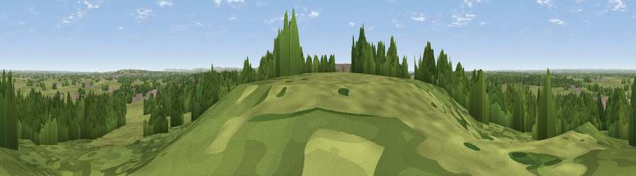

Viewpoint near Purton
#21626 in England · top 30% of its area beats it · near PurtonThe view, rendered

A 360° render of this exact spot computed from the terrain model, tree cover and land cover — summer colours, afternoon light, calibrated against photographs of famous viewpoints. Real trees, hedges and buildings will differ in detail.
The panorama
Grey silhouette: terrain skyline in each direction (720 bearings, Earth curvature and refraction included). Dashed green: skyline with trees (+15 m) and buildings (+8 m) as obstacles. Blue strip: how far the ground is visible on each bearing.
Where the view opens
Wedge length = distance to the farthest visible ground on that bearing (vegetation-aware). Rings at 10, 25 and 50 km.
What fills the view
57% grassland · 35% woodland · 4% built-up · 4% cropland
Angular shares of the visible panorama (visual magnitude), not map area. Landscape diversity 0.42 (0–1 Shannon).
Key numbers
More beautiful places nearby
The staircase of upgrades: each row has a higher view potential than everything closer. Driving times are estimates from straight-line distance, calibrated against real road routing — check an actual route before setting out.
| Place | Direction | Drive | Score |
|---|---|---|---|
| Hook Hill | S · 3 km | ~8 min | 51.9 |
| Viewpoint near Broad Blunsdon | ENE · 8 km | ~17 min | 53.6 |
| Viewpoint near Tockenham | SW · 8 km | ~17 min | 53.9 |
| Viewpoint near Broad Town | SSE · 9 km | ~18 min | 65.8 |
| Viewpoint near Broad Town | S · 10 km | ~19 min | 66.9 |
| Viewpoint near Liddington | ESE · 15 km | ~27 min | 73.4 |
| Viewpoint near Liddington | ESE · 16 km | ~28 min | 74.4 |
| Viewpoint near Woolstone | E · 22 km | ~36 min | 76.7 |
51.59237, -1.88483 · source: screening · position refined by local search. Computed location — check access rights before visiting.